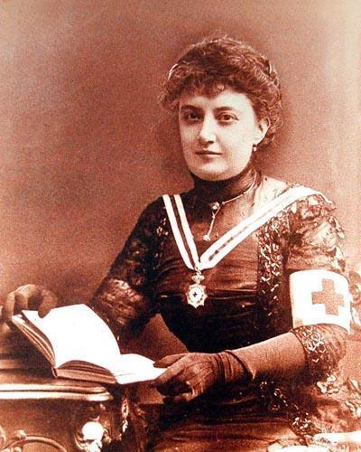
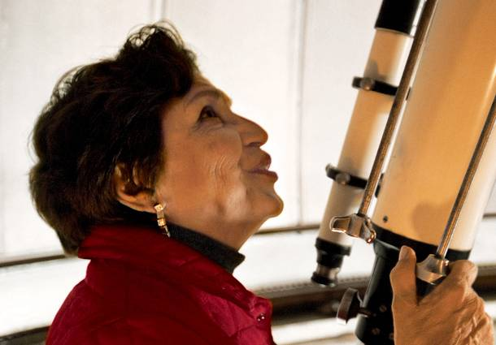
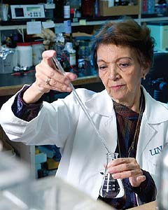

Matilde Montoya
(1859 - 1938)
Nació el 14 de Marzo en la Ciudad de México

Matilde Montoya
Silvia Torres-Peimbert
(1940)
Nació en la Ciudad de México

Silvia Torres-Peimbert
Mayra de la Torre
(1951)
Nació el 24 de Septiembre en la Ciudad de México
Mayra de la Torre
Victoria Chagoya
(1933)
Nació el 25 de diciembre en Oaxaca

Victoria Chagoya
Alejandra Bravo
(1961)
Nació el 29 de abril en la Ciudad de México
Alejandra Bravo
María Esther Orozco
(1945)
Nació el 25 de abril en San Isidro, Guerrero, Chihuahua
María Esther Orozco
Siempre hay un sueño. A veces se queda en el camino, pero sigue ahí. No es fácil
de alcanzar, pero si tu te esfuerzas, lo atraparás. Levántate, corre...Persigue tu sueño.
Autor desconocido